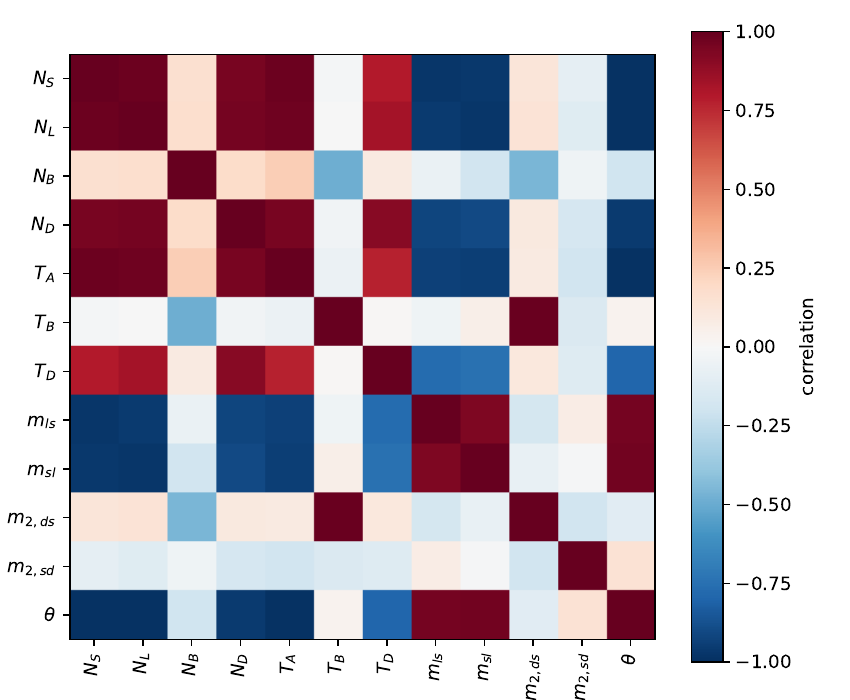

Why dadi's confidence intervals are too narrow, and what to do about it
September 2026If you fit a demographic model in dadi and ask for confidence intervals, you get numbers that look reassuringly tight. However, these values are lying to you, and by quite an amount. This post is about why, how much, and the correction that fixes it. I worked through all of this for a project on Scottish wildcats, and the details below come from that fit.
The wolf in sheep's clothing (why dadi lies to you)
dadi fits a model by computing the expected site frequency spectrum under it and comparing that to the observed spectrum with a Poisson likelihood, one term per bin. The likelihood is a product over bins, and the count in each bin is a sum over sites. Every site contributes as if it were an independent draw.
Sites aren't independent. Neighbouring positions on a chromosome share a genealogy, so they carry nearly the same information about the demographic history, and a run of a thousand linked SNPs tells you far less than a thousand independent ones would. dadi's likelihood counts them all. The technical name is for this is composite likelihood: it has the form of a likelihood and is maximised like one, but it is not the probability of the data under the model.
The consequence is that the likelihood surface is much sharper than the data justify. Everything you'd normally derive from curvature inherits the problem that Wald intervals come out too narrow, and AIC penalises complexity too lightly, so it favours over-fitted models - obviously a major issue in comparing multiple models with differing parameters.
How much of a nuisance is composite likelihood?
The composite-likelihood version of AIC replaces the parameter count k with an effective parameter count that accounts for the dependence between sites. For my main wildcat model, which has twelve parameters including θ, the effective count came out at 293.
Remember this number. Treating linked sites as independent made the likelihood behave as though the model had about 25x as many free parameters as it does. The uncorrected AIC for that fit was 2,846, whereas the corrected value was 3,408. The gap of over 500 units between the same model's two scores highlights the impact of composite likelihood on model comparisons.
The fix
There are two things you can measure about a likelihood at its maximum. One is how sharply it curves away from the peak: the Hessian, H. That's what standard errors are normally built from, and it's what the composite likelihood gets wrong. The other is how much the gradient of the likelihood wobbles when you look at different parts of the data: the variability of the score, J.
For a true likelihood these two agree, which is why you can get away with using only H. For a composite likelihood they don't: H says the peak is sharp, while J, measured across independent blocks of genome, says the location of the peak jumps around from block to block far more than the curvature implies. The ratio between them is the correction. Formally the sandwich covariance is H−1JH−1, and the effective parameter count is tr(JH−1). This is the Godambe information matrix approach, and Coffman and colleagues showed in 2016 that it works well for dadi specifically.
J has to be estimated by bootstrapping. You chop the genome into blocks long enough that linkage between blocks is negligible (I used 1 Mb), resample blocks with replacement to make replicate spectra, and compute the covariance of the gradient across replicates. I used 100 replicates, which is enough for the point estimate but leaves roughly 10–15% noise on the effective parameter count, since a covariance matrix from n replicates has error of order 1/√n. That noise matters when comparing two models that score within a few tens of units of each other, as two of mine did.
That's all great. But what can go wrong?
dadi has a function for this, Godambe.GIM_uncert, and I
ended up not using it, for reasons that are worth spelling out.
Two inversions when one will do. The library forms G = HJ−1H and then inverts G to get the covariance. That inverts J and then G. Writing the covariance directly as H−1JH−1 inverts only H. This sounds pedantic until you see that my H had a condition number of around 1015, which in double precision leaves essentially no significant digits. Every inversion you can avoid, you should.
Negative time. A Wald interval is symmetric on whatever scale you compute it. On the linear scale, the lower limit for one of my times came out negative. The fix is to take the interval on log p instead, using the delta method (σlog p = σp/p), and exponentiate. The interval is then multiplicative about the estimate, which is also how I'd describe the widths: "known to within a factor of four" is more useful than "±3 × 104 years".
Log scale, but not for the derivatives. You might think that if the intervals are on the log scale, the finite differences should be too. dadi supports this, but its step-size rule falls back to a one-sided difference for any parameter below one, and on my data that put a negative eigenvalue into H, which means the "maximum" no longer looks like a maximum. Derivatives on the linear scale, intervals on the log scale.
Check two step sizes. H and J both come from finite differences with a step ε, and there's no principled way to choose it. I computed everything at ε = 0.01 and 0.005. If the effective parameter count barely moves, the differences have converged. For my best model it changed by 0.56; for the worst-fitting model it changed by 21, which is itself a diagnostic, since misspecification makes J and H diverge and the penalty unstable.
Fits on a bound are not fits. All of this assumes the fit is at an interior maximum. If a parameter finished on the edge of its search box, the likelihood doesn't fall away in every direction, the asymptotic theory doesn't apply, and the finite differences step outside the region you searched. One of my three models did this, and its CLAIC, though numerically the best, doesn't mean anything.
Doing it yourself - the code
dadi 2.4.4 doesn't implement CLAIC directly (later versions do). But
Godambe.get_godambe computes H and J along
the way, and once you have them the rest is a few lines. Everything
below, the CLAIC, the intervals, and the correlation matrix, derives
from the same pair of matrices at the same step size, so no refitting
is needed.
import numpy as np
from dadi import Godambe
# popt: fitted parameters (with theta appended if you want it included);
# boots: list of bootstrap spectra
G, H, J, _ = Godambe.get_godambe(func_ex, pts, boots, popt, data,
eps=0.01, log=False)
# effective number of parameters and CLAIC
k_eff = np.trace(J @ np.linalg.inv(H))
claic = -2 * ll_opt + 2 * k_eff
# sandwich covariance: invert H only
Hinv = np.linalg.inv(H)
cov = Hinv @ J @ Hinv
se = np.sqrt(np.diag(cov))
# 95% intervals on the log scale, via the delta method
se_log = se / popt
lo, hi = popt * np.exp(-1.96 * se_log), popt * np.exp(1.96 * se_log)
# correlation matrix
corr = cov / np.outer(se, se)
Note that get_godambe works on whatever parameter vector
you hand it. To include θ, do what GIM_uncert does
internally with multinom=True: append the fitted θ to
popt and wrap func_ex so that it scales the
spectrum by the last parameter instead of optimising θ out.
Why the correlation matrix is not optional
The last line of that snippet is the one I'd argue for hardest. Even corrected intervals are marginal: each describes one parameter with all the others free to move. That hides a lot.

In my fit the three deepest parameters each had intervals spanning a factor of five to seven, which sounds like three separately uncertain quantities. The correlation matrix says otherwise: they move together along a single ridge, and the data constrain one direction in that three-dimensional space, not three. Meanwhile two of my four "well determined" parameters correlate at 0.987, so what is actually pinned down is their product. Neither fact is visible in a table of intervals. If you report one, report both.